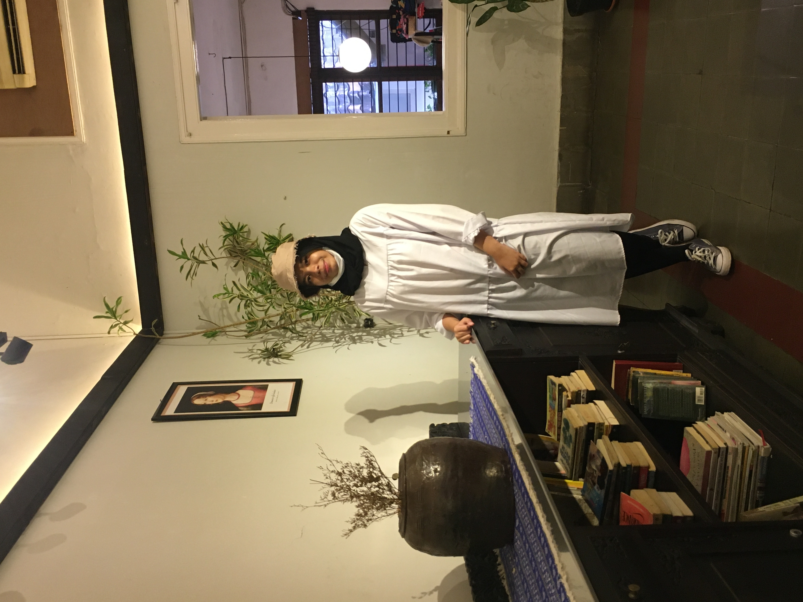

Pengalaman PJJ selama Pandemi Covid-19
Biodata Penulis
| Nama | Talitha Amanda Salsabila Hakim |
|---|---|
| Tempat, tanggal lahir | Bogor, 7 Juli 2004 |
| Usia | 16 tahun |
| Agama | Islam |
| Hobi | Bermain musik |
| Cita-cita | Apoteker |
Dalam Pembelajaran Jarak Jauh (PJJ) ini, pastinya banyak pengalaman baik maupun pengalam buruk. Saat Pembelajaran Jarak Jauh (PJJ), saya merasa metri teori lebih mudah dicerna karena guru-guru memberi video dan pdf mengenai materi pembelajaran yang bisa ditonton atau dibaca berulang-ulang kapanpun dan dimanapun. Selain itu, lebih banyak waktu luang untuk fokus merawat diri sendiri seperti berolahraga, istirahat yang lebih banyak dibandingkan saat sekolah offline, dan belajar hal-hal baru serta menemukan hobby baru. Banyak hal yang kita temukan selama Pembelajaran Jarak Jauh (PJJ) ini salah satunya kita bisa mengenal teknologi baru, yaitu google classroom, zoom, google meet, dan sebagainya.
Disisi lain, Pembelajaran Jarak Jauh (PJJ) ini ada juga pengalaman buruknya saat sedang presentasi online atau mendengarkan penjelasan materi dari guru via zoom terkadang koneksi jaringan yang tiba-tiba buruk sehingga tidak bisa presentasi ataupun menangkap penjelasan materi dari guru secara maksimal. Deadline tugas yang diberikan oleh guru-guru juga cukup singkat dan berdekatan dengan tugas yang lainnya. Sehingga, saya terkadang merasa sulit mengatur waktu untuk mengerjakan semua tugas. Selain itu, sebagai siswa/i SMK seharusnya kita melakukan praktik secara langsung. Namun, hal tersebut selama Pembelajaran Jarak Jauh (PJJ) hanya menonton video praktik yang diberikan oleh guru tanpa melakukan pembelajaran praktik itu secara langsung.